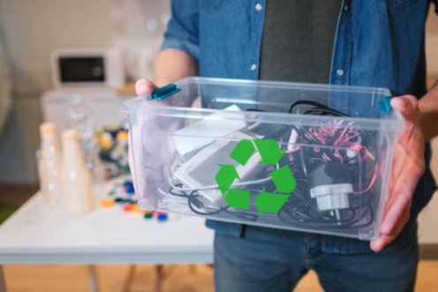

Presentación:
ReTecno Argentina es una organización no gubernamental dedicada a la recolección, reutilización y reciclaje de residuos electrónicos. Nuestro objetivo es reducir el impacto ambiental de la tecnología en desuso y promover una economía circular basada en la recuperación de materiales y dispositivos.
